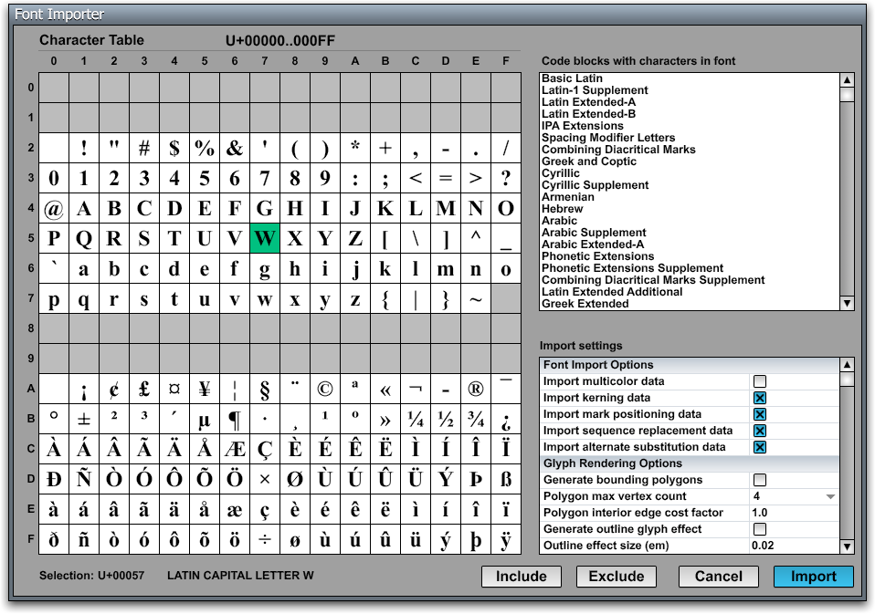

Font Importer
{kind=link}

In most types of applications, text is rendered into a 2D drawing context by the operating system using the information stored in OpenType or TrueType font files. However, this method of text rendering is not compatible with hardware-accelerated 3D graphics, and it suffers from inconsistencies among different platforms. In order to render high-quality text in a 3D environment and produce exactly the same results on all platforms, the C4 Engine uses its own internal font format.
Fonts used by the C4 Engine are stored as font resources having the .fnt extension. A font resource is generated by the Font Importer tool by importing a OpenType or TrueType font having the .ttf extension.
The C4 Engine can render text from all planes containing characters currently defined by the Unicode Standard. The engine always stores and processes strings using the UTF-8 encoding to provide full compatibility with ordinary ASCII strings.
To generate a font, either select Import Font from the C4 Menu or type ifont in the Command Console. The Font Importer will then display a dialog allowing you to pick a .ttf file from inside the Import folder. Once you have chosen the font that you want to import, the main Font Importer window will appear. The layout of this window is shown in the Figure 1.
The Font Importer window displays a 16×16 grid containing a preview of the available characters within a single 256-entry code page. Only the characters that are present in the font are shown, and only pages having at least one character in the font are accessible. The list on the right side of the window shows the standard names for the Unicode blocks for which the font provides at least one character.
You can navigate among the available code pages by pressing the Page Up and Page Down keys. Unless a setting has the keyboard focus, the Left Arrow and Right Arrow keys also navigate to the previous and next code pages, respectively. Clicking on a code block name in the block list will cause the first page covered by the block to be shown if you are not already viewing a page that intersects the block's Unicode range.
Character Selection
A single character can be selected by clicking on it. A range of characters can be selected by holding in the Shift key while clicking. The selection is always a contiguous range, and the Unicode values for the characters in the selection are shown at the bottom-left corner of the window. If a single character is selected, then the Unicode name for that character is displayed at the bottom of the window.
All characters can be selected at once by typing Ctrl-A, and all characters can be deselected by typing Ctrl-Shift-A.
When a code block name is clicked in the block list, all of the glyphs in the block are selected.
Typing Ctrl-C while characters are selected causes those characters to be copied to the clipboard.
Character Inclusion and Exclusion
Many fonts contain a far greater number of characters than are needed by an application. The Font Importer lets you pick which characters in the font are included in the font resource generated for use by the C4 Engine. A character is rendered in black when it is marked for inclusion in the font resource. Characters that are not to be included are rendered in gray. The currently selected range of characters can be included or excluded by clicking the Include and Exclude buttons at the bottom of the window.
By default, only Unicode ranges U+0020..U+007E and U+00A0..U+00FF are included, and the rest of the font is excluded. These ranges correspond to the Basic Latin and Latin-1 Supplement code blocks in the Unicode Standard. The Basic Latin block cannot be excluded—it is always part of the generated font resource.
If an attempt is made to render a character that was not imported (or didn't exist in the original font at all), then the missing character symbol is rendered in its place. This is usually a rectangular box.
Import Settings
|
Setting |
Description |
|
Font Import Options |
|
|
Import multicolor data |
Determines whether multicolor glyph data is imported for the font, when available. If the |
|
Import kerning data |
Determines whether kerning data is imported for the font, when available. If the |
|
Import mark positioning data |
Determines whether mark positioning data is imported for the font, when available. This data is needed to properly place combining diacritical marks when text is laid out. |
|
Import sequence replacement data |
Determines whether sequence replacement data is imported for the font, when available. This includes information about glyph composition and ligatures defined by the |
|
Import alternate substitution data |
Determines whether alternate substitution data is imported for the font, when available. This includes information about all substitution features defined by the |
|
Glyph Rendering Options |
|
|
Generate bounding polygons |
Causes extra geometric data to be generated so that glyphs can be rendered using 3–6 sided polygons that cover less area than bounding boxes. This can increase performance for text rendered at large sizes when the Use bounding polygons setting is checked for a particular text widget. Enabling this optimization during the import process has no performance cost at smaller sizes if the optimization is not enabled for a text widget. |
|
Polygon max vertex count |
Specifies the maximum number of vertices generated for a glyph’s bounding polygon, which can be in the range 4–6. The import process takes longer for higher values. |
|
Polygon interior edge cost |
Specifies the interior edge cost factor for a glyph’s bounding polygon. This has an effect bounding polygons in such a way that interior edge lengths are considered more or less expensive when determining the optimal shape. |
|
Generate outline glyph effect |
Causes expanded outlines to be generated for all glyphs so they can be rendered with the outline effect. Using this option increases file size significantly. |
|
Outline effect size (em) |
Specifies the size of the outline effect in em units. This is typically a very small value near the default of 0.2. |
|
Outline effect miter limit |
Specifies the miter limit for the outline effect. When this limit is exceeded at a corner in a glyph, the corner is rounded or beveled. |
|
Outline effect join style |
Specifies whether corners are rounded or beveled when the miter limit is exceeded. |
|
Text Decoration Options |
|
|
Underline size (em) |
The thickness of the underline stroke in em units. This is initially set to the default value defined in the |
|
Underline position (em) |
The position of the bottom of the underline stroke, in em units. This is initially set to the default value defined in the |
|
Strikethrough size (em) |
The thickness of the strikethrough stroke in em units. This is initially set to the default value defined in the |
|
Strikethrough position (em) |
The position of the bottom of the strikethrough stroke, in em units. This is initially set to the default value defined in the |
|
Script Transform Options |
|
|
Subscript scale X |
The scale in the x direction for transform-based subscripts. This is initially set to the default value defined in the |
|
Subscript scale Y |
The scale in the y direction for transform-based subscripts. This is initially set to the default value defined in the |
|
Subscript offset X |
The offset in the x direction, in em units, for transform-based subscripts. This is initially set to the default value defined in the |
|
Subscript offset Y |
The offset in the y direction, in em units, for transform-based subscripts. This is initially set to the default value defined in the |
|
Superscript scale X |
The scale in the x direction for transform-based superscripts. This is initially set to the default value defined in the |
|
Superscript scale Y |
The scale in the y direction for transform-based superscripts. This is initially set to the default value defined in the |
|
Superscript offset X |
The offset in the x direction, in em units, for transform-based superscripts. This is initially set to the default value defined in the |
|
Superscript offset Y |
The offset in the y direction, in em units, for transform-based superscripts. This is initially set to the default value defined in the |
Saved Configurations
When a font is imported, the ranges of included characters and the import settings are saved in a .cfg in the same folder as the .ttf file being imported. The next time the same font is imported, that information is read from the .cfg file and used to initialize the Font Importer settings.